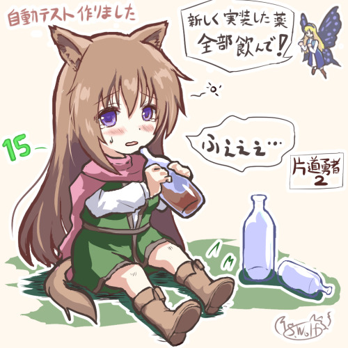

■2023-11-25 (土) 片道勇者2開発+11 自動テスト機能搭載▼
ようやく久しぶりにフリーになれましたので『片道勇者2』の開発再開です！
もう40日以上ぶり！
しかし久しぶりに触ると分からないところだらけになっていて
恐ろしいほどシステムいじりに億劫になってしまっているので、
まずはリハビリ、兼、土台固めとして、
放置されていた山ほどのバグ修正からやっています。
それと本格的なデータ作りに入る前に、
今回からやってみようと思っていた
「自動テスト機能」の搭載も進めてます！
ゲーム開発者の方も見てるでしょうから
今回はその自動テスト機能についてお話をしましょう。
※自動テスト機能で「新しく作ったアイテムをまとめて使わせる」といったこともワンキーでできるようになるので手軽！

◆片道勇者2 自動テスト機能
【その前に 手動テスト機能の話】
自動テストの話の前に、実は『片道勇者』には
前作にもテスト時用のデバッグ機能が用意されていて、
「指定した好きなアイテムを入手できる」とか
「好きなNPCを前に出す」といったことができていました。
なので、手動でテストをすること自体は何も問題なかったんですよ。
が、なんせデータ数が多く、まとめてテストするときに
一つ一つ選びながら全部手動でやり直すのは意外に大変で、
集中力を消耗します！
指定の要素を探すだけで5～10秒くらいかかるときがありますし、
それが面倒臭くなってテストへの心理的ハードルが
気付かぬうちに上がってしまっていたことも多々あります。
なので手動のデバッグ機能も十分以上に役に立ってはいたのですが、
私は「ゲーム開発」という長期戦でテストへの心理的ハードルが
上がるのはなるべく回避したいと考えていました。
【自動テスト機能の搭載！】
そこで今回思い切って作ることにしたのが「自動テスト機能」！
たとえばtxtファイルに「目の前にゾンビを出現させて」
「油ビンを取得して投げて」「炎の巻物を取得して使って」
といったコマンドを指定しておけば、
キーボードからワンボタンで一連の動作をやってくれます！
このケースなら、油による炎ダメージ補正がかかっているかチェックできます。
そんな風に一つのシナジーをチェックする目的で使うときもあれば、
別のtxtファイルに
「アイテム1～999番までそれぞれの使い方で使って動作チェックする」とか、
「全ての敵を順番に呼び出して『炎の巻物』を
1回ずつ喰らわせて炎耐性のダメージチェックする」
「全NPCを順番に呼び出して友好化して会話の流れを全部出力」
みたいなことを書いておいて、定期的にテストするといったこともできます！
今のところ作った自動テスト機能は「アイテムの取得＆使用」や
「NPC設置」くらいですが、さらに機能を増やせば、
「街やダンジョンを何度も作り直してNPC出現頻度の肌感覚を知る」
「1000km地点の砂漠地形の設定でランダムなマップを作ったり、
その地域設定で敵やアイテムを出しまくる」
みたいなランダムテーブルのチェックもできそうです。
まあ2つめの方はランダムテーブルリストを
見やすく表示するようにすればそれで済むことですけども！
※以下は最強のゾンビを配置→火炎ビンを投げる→
燃料油のビンを投げる→火炎ビンをまた投げる、という手順をワンキーで実行するテスト。
燃料油で火炎ダメージ3倍になってるか試しています。
こうした『自動テスト機能』、テキストファイルに指示を書く手間は
ありますが、ローグライクみたいにランダム要素で
相乗効果だらけのゲームを作ったり、
低確率で起きる問題を再現するために
ひたすら試行しまくることが求められる状況では
力強い友になることでしょう。
前作ではデバッグやテスト周りで地獄を見たので、
今作ではもっと効率良くできるよう意識していきたいです！
前作は地獄のバグをいっぱい出して大変なことになってしまったので、
今回は少し時間がかかっても処理の見通しをよくすることと、
何日か使ってもいいのでデバッグ力やデバッグ速度を
高めつつ進めることを意識していきたいと思います。
ということで引き続き『片道勇者2』開発、がんばっていきます！
以下はいただいた気になった拍手コメントです！ いつもありがとうございます！
>最近過去の記事を見て思い出したんですが、以前販売していた
>メタルストラップの再販とかはないんでしょうか？ .
>今更になって欲しくなってきました… .
申し訳ございませんが今のところ再販の予定はありません。
もとより他のサークル様への外注として作ってもらったものなのもありますが、
今だと作るコストがそのときに比べて激増してたり、
一度に作る量が多い発注方式だったりして再販しにくいっぽいので、
次に何か作るならもうちょっと小さいロット（単位）で
発注・再販しやすそうなグッズも考えてみたいと思います。
（メタルストラップはお金出してまず型から作ってもらわないとダメですし、
その型もそんなに長く置いてもらえないみたいです。過去に作ったのはもうなさそう）
と思って調べたら手軽そうなアクリル製のグッズなども作成コストが
かなり上がったみたいでびっくりしています！ 円安ー！！
2023-11-25 (土)  カテゴリ: 片道勇者2
カテゴリ: 片道勇者2
 カテゴリ: 片道勇者2
カテゴリ: 片道勇者2